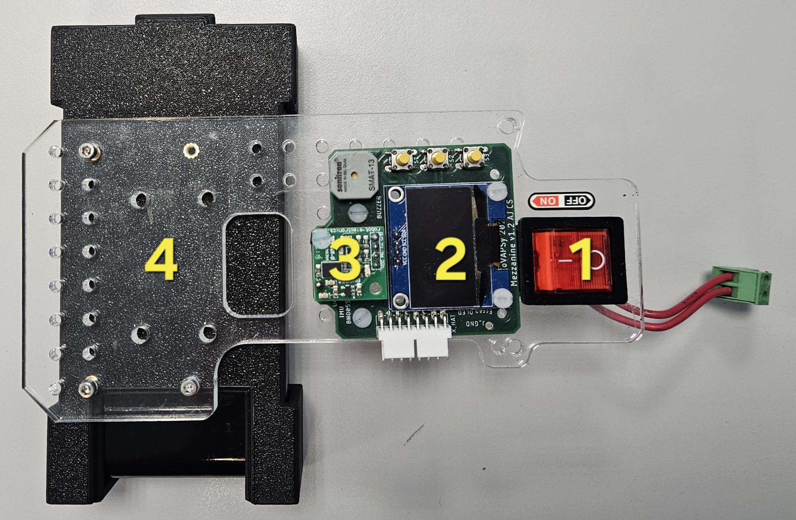
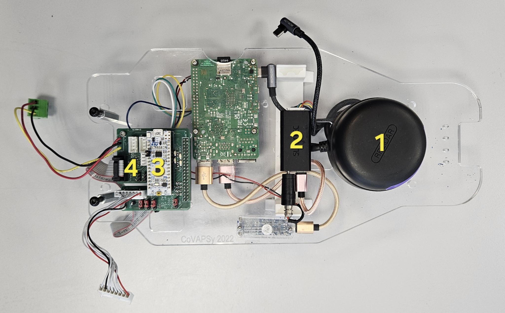
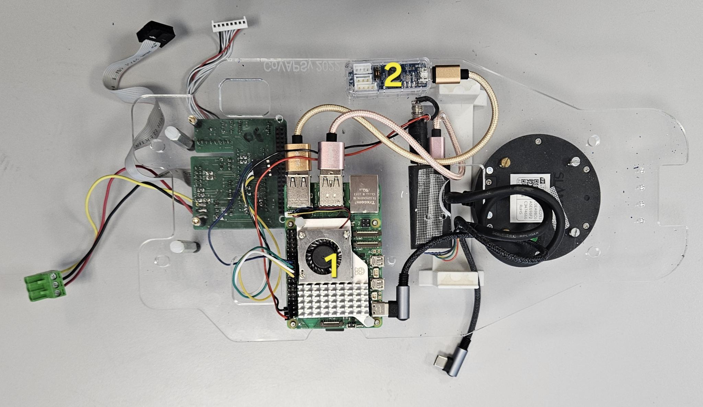
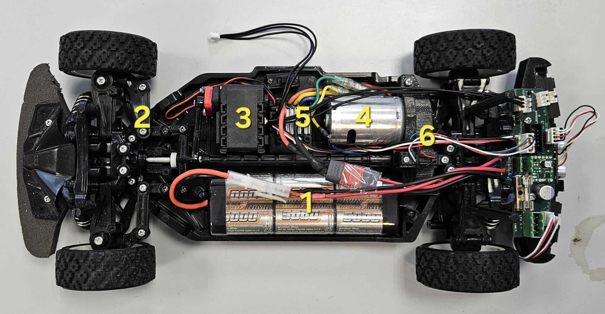
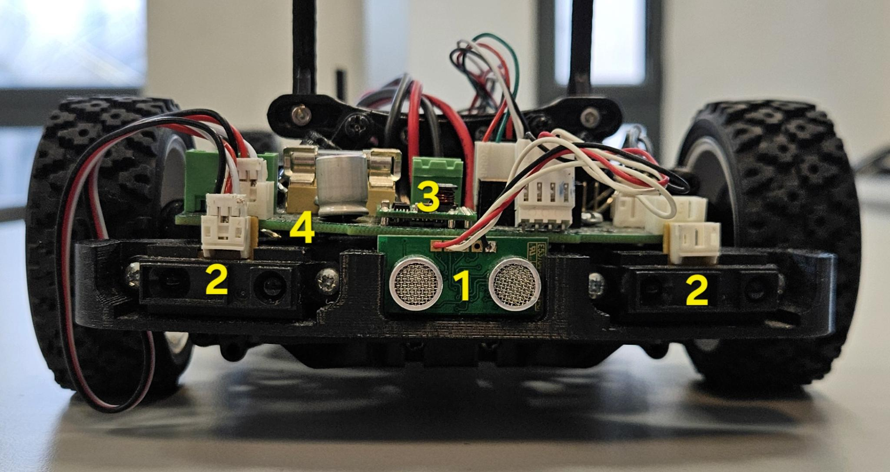

Architecture physique de la voiture
L’architecture physique de la voiture peut être divisée en trois étages :
l’étage supérieur
l’étage intermédiaire
l’étage inférieur.
Cette organisation permet de séparer les éléments de supervision, de calcul embarqué, de puissance et de capteurs.
L’étage supérieur
L’étage supérieur est le plus simple à identifier. Il est composé de 4 éléments principaux, ou 5 lorsque la caméra 3D est installée.

1. Switch de sécurité
Le switch de sécurité permet d’activer ou de couper l’alimentation des moteurs, du STM32 et des capteurs.
Toute cette partie est alimentée par la batterie moteur. En cas de problème, ce switch permet donc d’arrêter rapidement les éléments liés à l’actionnement et aux capteurs.
2. La mezzanine
La mezzanine est la carte de la partie supérieure, composée de l’écran, l’IMU, un buzzer et 3 boutons poussoirs.
Vous pouvez trouver le layout de la Mezzanine ici
Écran de contrôle
L’écran affiche le nom de la voiture, il est commandé par le STM32.
Le bouton jaune situé en haut à droite permet de réinitialiser le STM32. Cela peut être utile lorsque :
l’IMU renvoie des données incohérentes
la voiture ne répond plus correctement
Le buzzer indique un reset du STM32. Les boutons 2 et 3 sont reliés (par défaut) au STM32, mais ne font actuellement rien.
Note
Le STM32 peut reset involontairement si sa tension d’alimentation (batterie moteur) chute, faisant crasher le STM32. (cf STM32)
IMU
L’IMU utilisée est un Bosh BNO055.
Il permet de mesurer :
l’accélération (acc_x) par l’accéléromètre
la vitesse angulaire (yaw_rate) par le gyromètre
l’orientation du véhicule (yaw) par le gyroscope
Il est utilisé pour estimer l’orientation de la voiture, notamment le yaw. Les données IMU sont publiées avec le type standard sensor_msgs/msg/IMU sur le topic /raw_imu_data.
Note
L’accélération est publiée mais n’a pas été utilisée, et peut nécessiter une calibration.
4. Batterie de l’ordinateur embarqué
Cette batterie 5V alimente l’ordinateur embarqué (raspberry pi) indépendamment de la batterie moteur.
Cette séparation est pratique pour éviter les coupures/chutes de tension qui pourraient éteindre la Raspberry Pi.
La rasberry Pi 5 consommant beaucoup plus que le moteur, cette séparation a aussi permis une nette amélioration de l’autonomie de la batterie moteur qui étais très limitée avant (15 min).
L’étage intermédiaire
L’étage intermédiaire est divisé en deux parties :
la partie supérieure
la partie inférieure
La partie supérieure de l’étage intermédiaire
Cette partie est composée de 4 éléments visibles sur la photo suivante.

1. LiDAR
Le LiDAR utilisé est un SLAMTEC RPLIDAR A2M12.
Il permet de mesurer la distance entre la voiture et les obstacles autour d’elle. Il est utilisé pour la perception de l’environnement et les algorithmes de navigation réactive. Les données du LiDAR sont publiées sur le topic /scan.
Note
On utilise ce capteur avec le noeud sllidar_node dans le package sllidar_ros2. Des paramètres dans le launch file permettent de limiter l’angle de vue publié.
Son baudrate est à 256000.
2. Adaptateur Slamtec
Cet adaptateur fait l’interface entre le LiDAR et l’ordinateur embarqué.
Il convertit la liaison du LiDAR vers une interface exploitable par la Raspberry Pi, il est relié :
en micro-USB à la Raspberry Pi
aux lignes d’alimentation nécessaires au fonctionnement du LiDAR
Avertissement
L’alimentation du LiDAR doit-être la même que celle de l’USB pour éviter des retours de courant. Il faut donc utiliser l’alimentation 5V utilisée par la Rasberry Pi (montage actuel).
3. STM32
La STM32-L432KC est le microcontrôleur chargé des fonctions bas niveau.
Son rôle principal est de :
piloter le moteur de propulsion via l’ESC
lire et relayer les données des capteurs
La communication avec la Raspberry Pi se fait en SPI. Le code de cette carte n’est pas entièrement disponible dans le Git actuel car l’étudiant qui s’en occupait n’a pas mis son code sur github il y a plusieurs années. Si vous avez besoin de reflash un stm32 allez voir la partie stm32 de troubleshooting.
Note
Le STM32 est actuellement alimenté directement (via le fusible) par la batterie moteur. C’est le fil jaune qui l’alimente (sur la broche Vin du STM32), et c’est aussi sur ce fil que la tension publiée dans /battery_voltage est mesurée (par un pont diviseur de tension branché à la broche A4 du STM32).
La tension d’alimentation Vin du STM32 doit-être supérieure à 5.5V (idéallement au-dessus de 6V). Si le moteur demande trop de couple et fait chuter la tension, le STM32 peut s’éteindre.
4. HAT / carte d’interface
Le HAT sert d’interface matérielle entre plusieurs sous-systèmes :
la Raspberry Pi
la STM32
les capteurs
les moteurs
Son rôle est de centraliser les connexions et certaines liaisons de commande. C’est une carte de jonction importante dans l’architecture de la voiture.
Vous pouvez trouver le layout de la carte ici. Le hat et la raspberry pi étaient initialement prévus pour être les uns sur les autres, mais pour éviter des retours de courant dans la raspberry pi, ils sont désormais séparés et reliés par des câbles pour la communication SPI.
Des cavaliers permettent de choisir si le PWM et/ou l’UART sont reliés à la Rasberry Pi ou au STM32. De même on peut choisir la source du 3V3 (STM32 ou Rasberry Pi) pour le réseau 3V3 (Mezzanine et capteurs). La documentation sur ces branchements se trouve ici
Note
Actuellement, seul le SPI est branché à la Raspberry Pi. De plus, pour éviter les retours de courants, on préfère utiliser le 3V3 du STM32.
Il est peut-être possible d’enlever le TTL branché entre l’AX-12A et l’U2D2, et de brancher l’U2D2 par UART au Hat qui enverrais le Tx/Rx sur le TTL branché à la carte alim (qui alimente l’AX-12A). Il faut peut-être un autre cavalier sur la carte alim pour ça (nommé J-AX-12A). Ça n’a pas été testé, mais ça éviterais le retour de courant (très faible) dans l’U2D2 et surtout le TTL gênant quand on ouvre la voiture.
La partie inférieure de l’étage intermédiaire
Cette partie est composée de 2 éléments visibles sur la photo suivante.

1. Raspberry Pi
L’ordinateur embarqué est une Raspberry Pi 5 avec 8 Go de RAM.
Elle tourne sous Ubuntu 24.04 avec ROS 2 Jazzy. C’est elle qui exécute les nœuds ROS 2 de la voiture et orchestre la partie haut niveau.
2. U2D2
L’U2D2 est un convertisseur USB vers UART utilisé pour communiquer avec le moteur de direction.
Il est relié :
côté moteur de direction via la liaison TTL 3 broches
côté Raspberry Pi en USB
Note
L’U2D2 a un défaut de conception : il y a un faible retour de courant entre le 7V d’alimentation du moteur (TTL) et le 5V USB. L’U2D2 est conçu pour interfacer le servo avec le PC pour le programmer, pas pour le commander, même si il est souvent utilisé comme ça. Tant que ce retour de courant reste faible (ce qui est notre cas), ce n’est pas gênant. Mais il peut-être envisageable d’avoir une autre installation (cf HAT), voire même de ne pas utiliser l’U2D2 (utiliser l’UART du STM32).
L’étage inférieur
L’étage inférieur est le plus chargé. Il est séparé en deux sous-parties :
la partie puissance
la partie capteurs
La partie puissance
Cette partie est composée des éléments liés à l’alimentation et à l’actionnement.

1. Moteur de direction
Le moteur de direction pilote l’orientation des roues avant c’est un AX-12A.
Il reçoit ses commandes via la chaîne Raspberry Pi → U2D2 → liaison série TTL → actionneur de direction (cf U2D2).
Il est aussi relié à la carte ou sont branchés les capteurs de proximité pour être alimenté par la batterie moteur (7V).
Note
Son baudrate est à 1000000 sur notre bolide 2. Il est à 115200 sur bolide 1. C’est programmable en utilisant le logiciel Dynamixel Wizard 2 et en connectant le servo au PC via l’U2D2.
2. ESC
L’ESC (Electronic Speed Controller) pilote le moteur de propulsion c’est un Tamiya ESC TBLE-04S.
Il reçoit la commande de vitesse en PWM. Ce PWM correspond au standard pour les ESC. Vous pouvez trouver la documentation de ce composant ici.
Note
L’ESC est conçu pour être commandé par une radio. La documentation sur son comportement exact est inexistante. Il a été décris expérimentalement dans le noeud de machine d’état de l’ESC cmd_vel_node.
3. Moteur de propulsion
Le moteur de propulsion est un Tamiya 540 Torque 25T Motor.
Non, ça c’est sur bolide 1, c’est un Mabuchimotor RS540SH Ref:BD109829 sur notre bolide 2.
Il est commandé par l’ESC, lui-même piloté par le stm32 lui même commandé par la raspberry pi.
4. Fourche optique
La fourche optique sert à mesurer la rotation ou la vitesse. C’est une TT Electronics OPB815L.
Les valeurs de ce capteur sont publiées sur le topic /raw_fork_data.
5. Batterie moteur
La batterie moteur alimente la partie puissance de la voiture, notamment :
l’ESC ;
le moteur de propulsion ;
la STM32 ;
une partie des capteurs et actionneurs associés à la chaîne de puissance.
Elle est distincte de la batterie qui alimente l’ordinateur embarqué. Ce sont des batteries NiMH de 7.2-8.4 V, avec une capacité d’environ 5000 mAh.
6. Mécanisme de direction
Le mécanisme de direction transforme la commande du moteur de direction en angle de braquage au niveau du train avant.
La partie capteurs
Cette partie regroupe les capteurs de proximité installés sous la voiture.

1. Capteurs ultrason
Les capteurs ultrason mesurent la distance à certains obstacles proches. C’est un
Il est publié sur le topic /range/sonar_rear type standard sensor_msgs/msg/Range, compatible avec Nav2.
2. Capteurs infrarouges
Les capteurs infrarouges mesurent des distances de proximité latérale il y en a un à l’arrière gauche et un à l’arrière droit. Ce sont des Sharp GP2Y0A41SK0F
Ils sont publiés sur des topics séparés /range/ir_left et /range/ir_right de type standard sensor_msgs/msg/Range(compatible avec Nav2).
3. Convertisseur 5 V
Le convertisseur 5 V sert à abaisser ou stabiliser la tension nécessaire pour certains capteurs ou cartes électroniques.
Il permet d’alimenter correctement les composants qui ne fonctionnent pas directement à la tension batterie comme par exemple le stm32.
Vous pouvez trouver le layout de la carte ici.